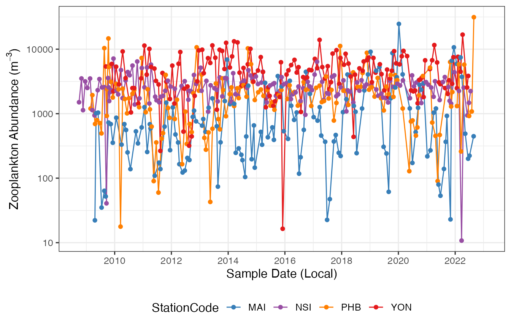
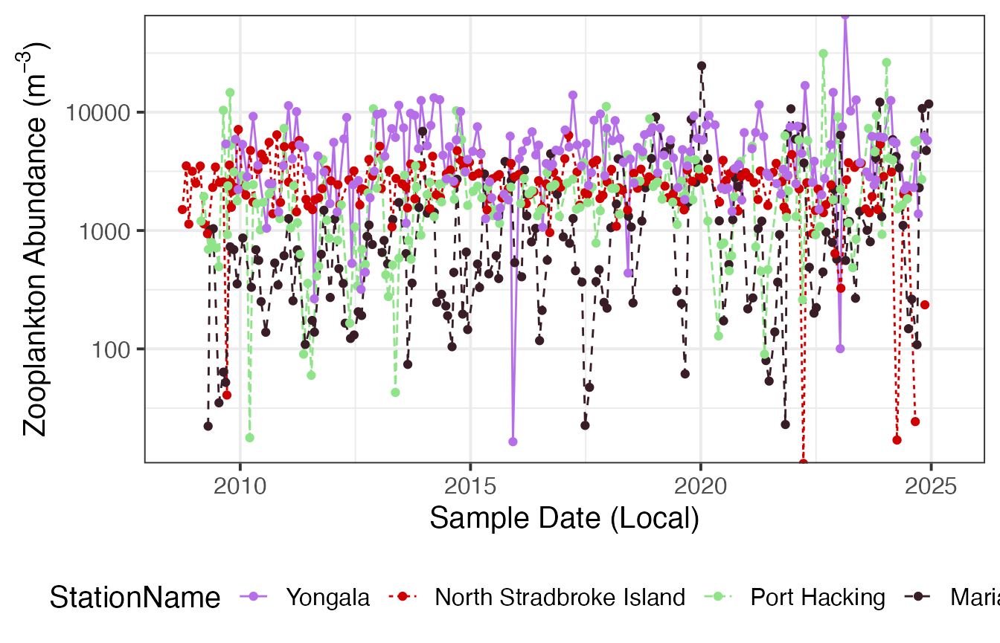
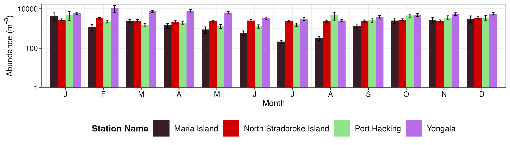
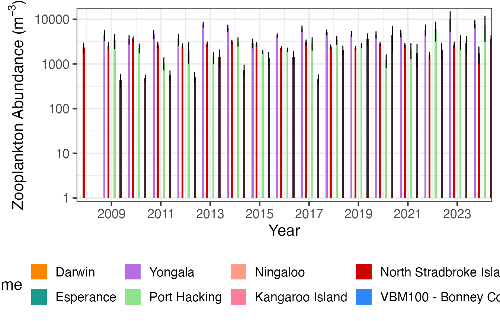
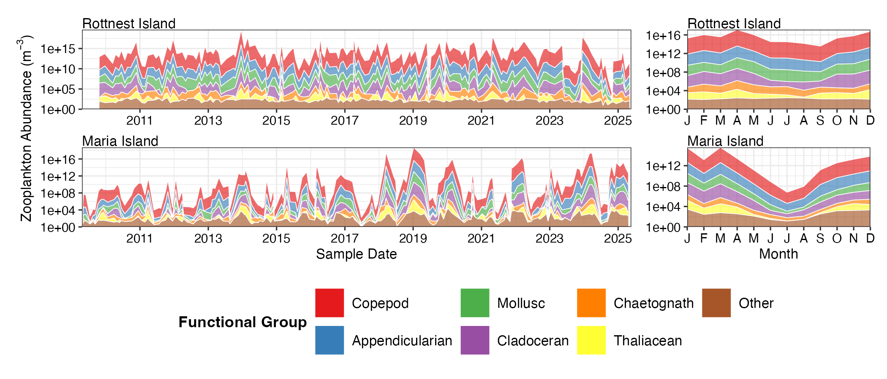
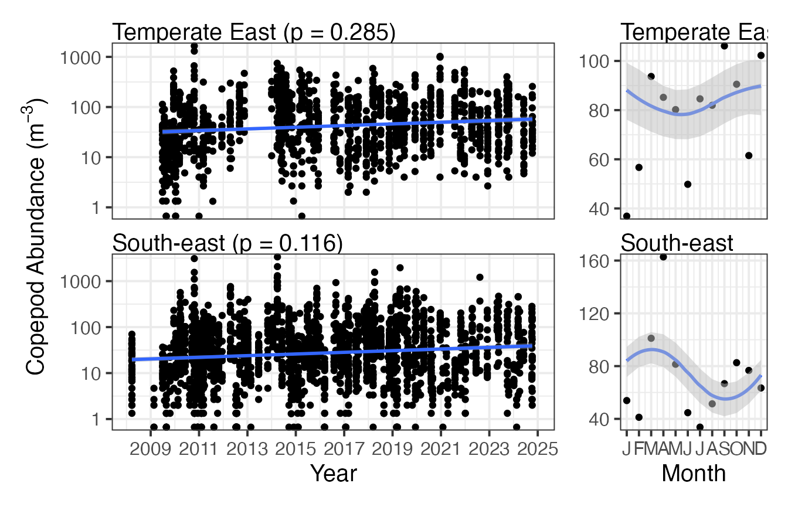
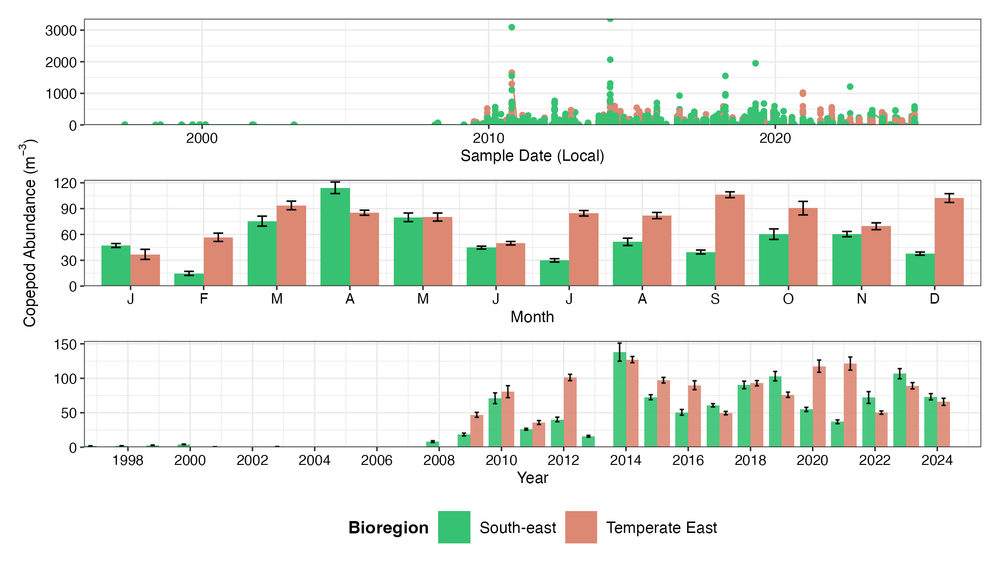
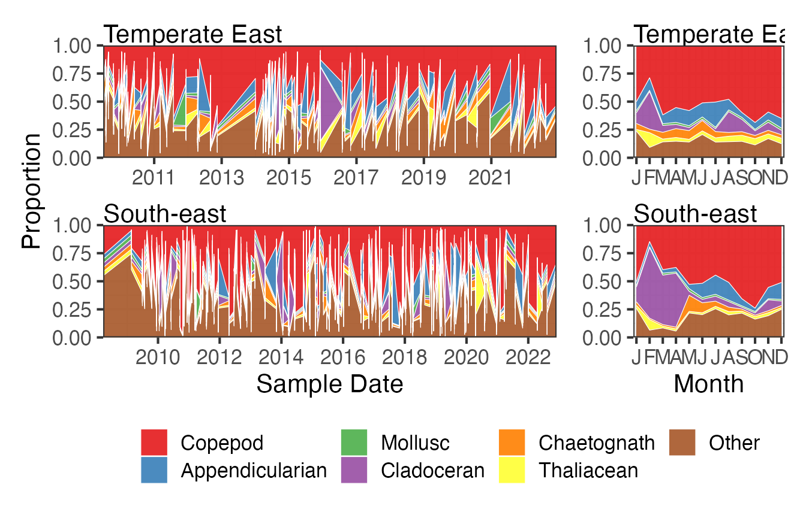

Have a look at the file and see what is available for plotting, by downloading the file you can inspect the parameters and the Stations available.
NRSz <- planktonr::pr_get_Indices("NRS", "Z")
unique(NRSz$Parameters)
#> [1] "Biomass_mgm3" "AshFreeBiomass_mgm3"
#> [3] "ZoopAbundance_m3" "CopeAbundance_m3"
#> [5] "AvgTotalLengthCopepod_mm" "OmnivoreCarnivoreCopepodRatio"
#> [7] "NoCopepodSpecies_Sample" "ShannonCopepodDiversity"
#> [9] "CopepodEvenness"
unique(NRSz$StationName)
#> [1] Darwin Esperance Kangaroo Island
#> [4] Maria Island Ningaloo North Stradbroke Island
#> [7] Port Hacking Rottnest Island Yongala
#> 9 Levels: Darwin Yongala Ningaloo North Stradbroke Island ... Maria IslandLong term plankton monitoring can provide insights into how zooplankton abundance and biomass are changing with time. This has implications for the fish communities they support and the lower trophic levels on which they depend for energy. Abundance and biomass trends don’t necessarily show the same temporal trends, here we show zooplankton abundance by time, but biomass can also be chosen as the parameter. Seasonal cycles can also be important for understanding planktonic communities, for examples in these plots it is clear that there is a much stronger seasonal cycle at Maria Island in a temperate location than at Yongala, a more tropical station.
NRSz <- planktonr::pr_get_Indices("NRS", "Z") %>%
filter(Parameters == "ZoopAbundance_m3") %>%
filter(StationCode %in% c("YON", "NSI", "PHB", "MAI"))
p1 <- planktonr::pr_plot_Trends(NRSz, Trend = "Raw", Survey = "NRS", method = "lm", trans = "log10")
p2 <- planktonr::pr_plot_Trends(NRSz, Trend = "Month", Survey = "NRS", method = "loess")
p1 + p2 +
ggplot2::theme(axis.title.y = ggplot2::element_blank()) + # Remove y-title from 2nd column
plot_layout(widths = c(3, 1), guides = "collect")
Here we plot the same information but change the format of the figures.
(p1 <- planktonr::pr_plot_TimeSeries(NRSz, Survey = "NRS", trans = "log10"))
(p2 <- planktonr::pr_plot_Climatology(NRSz, Survey = "NRS", Trend = "Month", trans = "log10"))
(p3 <- planktonr::pr_plot_Climatology(NRSz, Survey = "NRS", Trend = "Year", trans = "log10"))
We can also gain a lot of insight into the community structure by looking at how the composition (or proportions) of the functional groups changes over time, long term and seasonally. In this function we have chosen some of the more important function groups and plotted them as a time series and a seasonal cycle. Again you can see that Maria Island demonstrates a strong seasonal pattern with lower abundances in all groups during winter.
FGz <- pr_get_FuncGroups(Survey = "NRS", Type = "Z") %>%
dplyr::filter(StationCode %in% c("ROT", "MAI"))
p1 <- planktonr::pr_plot_tsfg(FGz, Scale = "Actual")
p2 <- planktonr::pr_plot_tsfg(FGz, Scale = "Actual", Trend = "Month") +
ggplot2::theme(axis.title.y = element_blank())
p1 + p2 +
patchwork::plot_layout(widths = c(3,1), guides = "collect") &
theme(legend.position = "bottom")
Have a look at the file and see what is available for plotting, by downloading the file you can inspect the parameters and the bioregions available.
CPRz <- planktonr::pr_get_Indices("CPR", "Z")
unique(CPRz$Parameters)
#> [1] "BiomassIndex_mgm3" "ZoopAbundance_m3"
#> [3] "CopeAbundance_m3" "AvgTotalLengthCopepod_mm"
#> [5] "OmnivoreCarnivoreCopepodRatio" "NoCopepodSpecies_Sample"
#> [7] "ShannonCopepodDiversity" "CopepodEvenness"
unique(CPRz$BioRegion)
#> [1] South-east None South-west
#> [4] Southern Ocean Region North-west North
#> [7] Temperate East Coral Sea
#> 8 Levels: North North-west Coral Sea Temperate East South-east ... NoneHere we can compare the long term time series copepod abundance data for the South-east and Temperate-east areas of Australia. Due to way the CPR data is collected this is easier to visualise in a regional context. There is not a noticeable difference in the abundance of copepods in these two regions from the plots but again you can see that the seasonal cycle is more distinct in the South-east.
CPRz <- planktonr::pr_get_Indices("CPR", "Z") %>%
filter(Parameters == "CopeAbundance_m3") %>%
filter(BioRegion %in% c("South-east", "Temperate East"))
p1 <- planktonr::pr_plot_Trends(CPRz, Trend = "Raw", Survey = "CPR", method = "lm", trans = "log10")
p2 <- planktonr::pr_plot_Trends(CPRz, Trend = "Month", Survey = "CPR", method = "loess")
p1 + p2 +
ggplot2::theme(axis.title.y = ggplot2::element_blank()) + # Remove y-title from 2nd column
patchwork::plot_layout(widths = c(3, 1), guides = "collect")
Plotting the same data as climatologies can provide another way to visualise the differences between sampling regions.
p1 <- planktonr::pr_plot_TimeSeries(CPRz, Survey = "CPR", trans = "log10") + theme(axis.title.y = element_blank())
p2 <- planktonr::pr_plot_Climatology(CPRz, Survey = "CPR", Trend = "Month", trans = "log10")
p3 <- planktonr::pr_plot_Climatology(CPRz, Survey = "CPR", Trend = "Year", trans = "log10") + theme(axis.title.y = element_blank())
wrap_plots(p1, p2, p3, ncol = 1, guides = "collect") & theme(legend.position = "bottom")
If we look at way the proportion of different functional groups varies over time we can see that copeopds, red, dominate the plankton in both areas, especially towards the end of winter, and that there is a notable bloom period of cladocerans in the South-east over the summer months.
FG <- pr_get_FuncGroups(Survey = "CPR", Type = "Z") %>%
filter(BioRegion %in% c("South-east", "Temperate East"))
p1 <- planktonr::pr_plot_tsfg(FG, Scale = "Percent")
p2 <- planktonr::pr_plot_tsfg(FG, Scale = "Percent", Trend = "Month") +
ggplot2::theme(axis.title.y = element_blank())
p1 + p2 +
patchwork::plot_layout(widths = c(3,1), guides = "collect") &
theme(legend.position = "bottom")